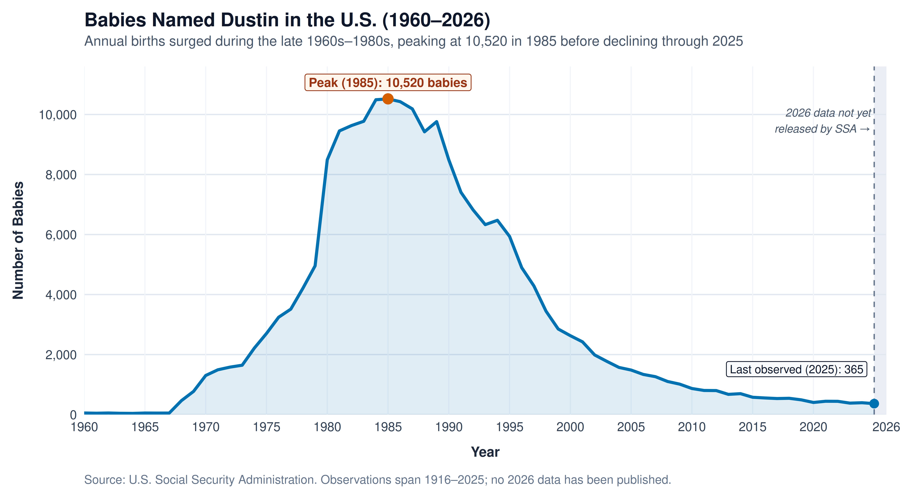

The Rise and Fall of the Name Dustin in the United States
Analysis of U.S. Social Security Administration birth records (1960–2026 display window; full historical dataset 1916–2025)
Peak Popularity (1985)
10,520
Highest annual U.S. births named Dustin
Latest Observed Year (2025)
365
2026 SSA birth records not yet released
Total Births (1916–2025)
209,721
209,143 (99.7%) born since 1960
1960 Baseline
53
Start of the 1960–2026 chart window
Annual U.S. Births Named Dustin (1960–2026 Axis Window)
Combined female and male births recorded by the Social Security Administration. The x-axis spans 1960 to 2026; observed data runs through 2025 (the latest published SSA release), with the unreleased 2026 period shaded.
Interactive Year-by-Year Explorer (1960–2026)
Hover over any point along the curve to inspect exact annual birth counts from the SSA dataset.
Key Findings & Data Integrity Notes
- Rapid climb after 1960: Only 53 babies were named Dustin in 1960, before the name rose steeply in the late 1960s and 1970s (reaching 1,303 in 1970 and 8,490 in 1980).
- 1985 peak: Popularity reached its all-time high in 1985 with 10,520 births, remaining above 8,000 births per year through 1990 (8,488).
- Post-1990 decline to present: Annual births declined to 2,629 in 2000, 869 in 2010, 404 in 2020, and 365 in 2025.
Methodology & Axis Range Note (1960–2026): All summary statistics are computed from the complete, unfiltered U.S. Social Security Administration baby names dataset, which records 209,721 total births named Dustin between 1916 and 2025 (including 578 births prior to 1960). Setting the visible x-axis window to 1960–2026 displays the modern era without excluding any historical records from summary calculations. Because the Social Security Administration has only published birth records through 2025, no data is fabricated or extrapolated for 2026.